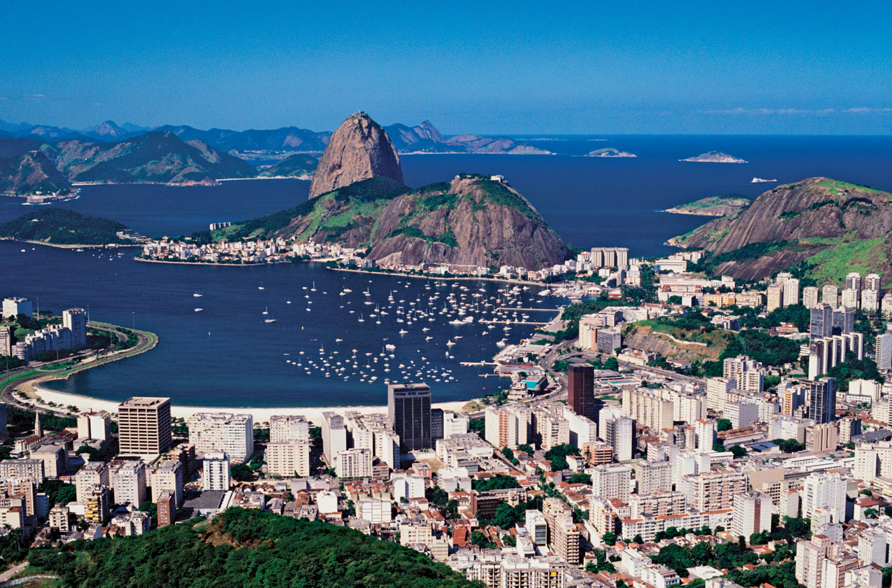
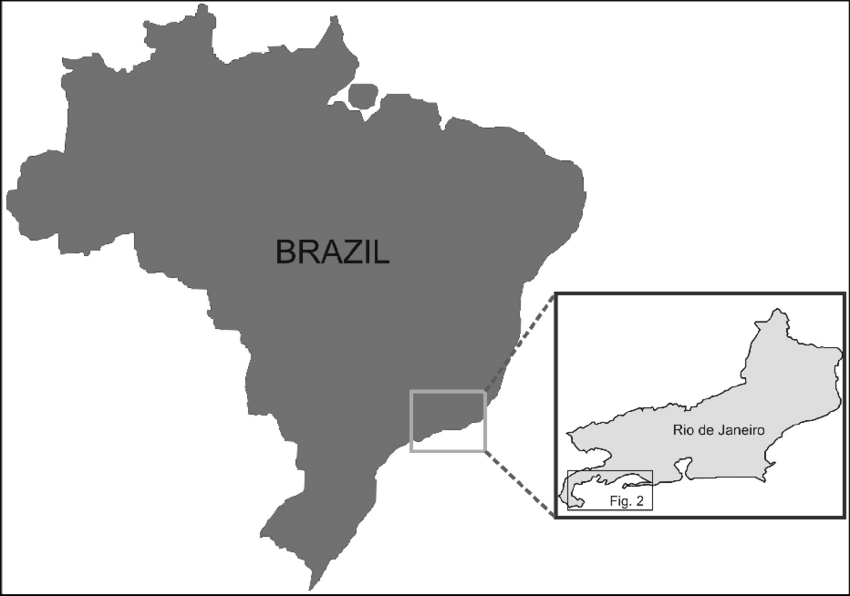
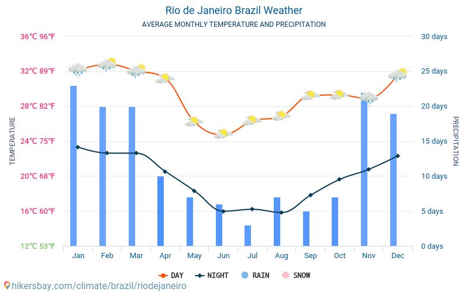
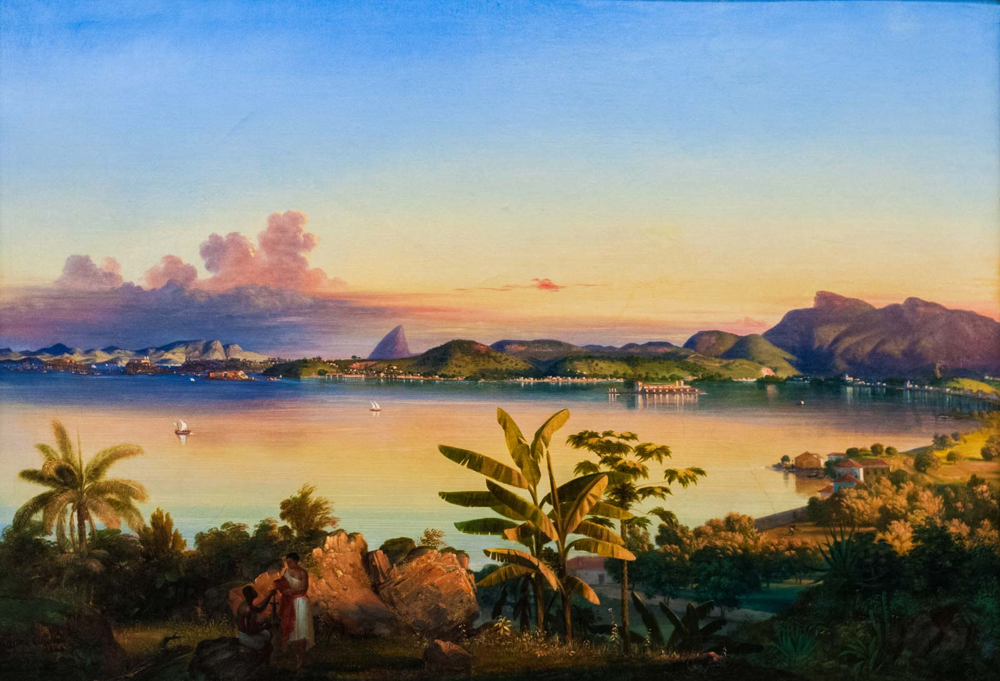
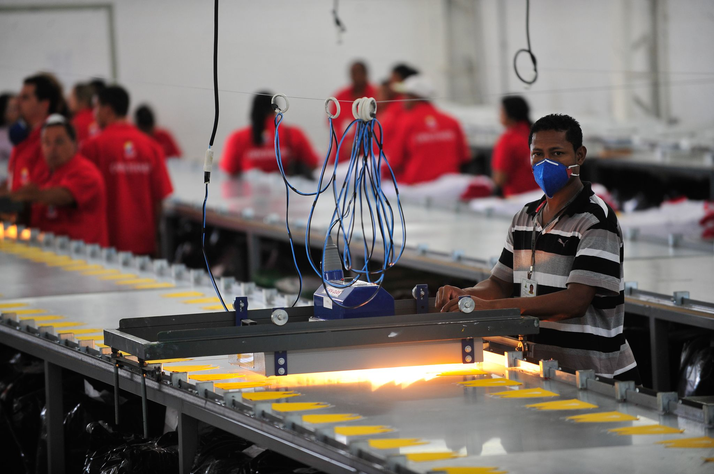

GOVERNMENT OF RIO
The municipality of Rio de Janeiro is governed by a mayor (prefeito) with the assistance of secretaries who head administrative departments. Since 1984 the mayor has been popularly elected to a four-year term. Legislative power is held by the members of the Municipal Chamber, who are simultaneously elected at large through a system of proportional representation. The same pattern holds for all the other municipalities of Greater Rio. As the state capital and home to a large proportion of the state’s population and wealth, Rio has a government that wields almost as much power as the state government. The state governor and the mayor of the Rio municipality are elected in alternate even-number years. They are often political rivals; Brazil’s form of federalism involves significant central government funding of both state and municipal activities, so the governor and the mayor often compete for largesse from Brasília. The outcome generally depends upon their political relationship with the president.
Municipal services
As frequently happens in rapidly developing metropolitan areas, Rio faces serious difficulties in providing urban services and facilities, especially in the fast-growing suburban areas. The water supply and sewer system belong to a state company, and a state-owned company also provides municipal gas supplies. The water supply system was upgraded during the 1960s, and efforts have been ongoing to extend the water and sewerage infrastructure to new urbanized areas and to the favelas.
Telephone operations were greatly enhanced following privatization in the late 1990s, and the improved service made great strides in addressing the significant backlog of requests for residential lines. As in other major Brazilian cities, mobile phone usage has surged in Rio. The distribution of electricity, long controlled by a private enterprise that was then purchased by the federal government in the 1970s, was again privatized in the late 1990s, which resulted in a marked improvement in service. Rio is connected to an electrical system that extends throughout south-central Brazil.
Health
The city generally has a healthful climate. Although pollution has long been a concern, there are no serious health problems, except within the favelas, where diseases related to lack of sanitation, poor diet, and inadequate health facilities prevail. The Rio de Janeiro area as a whole has one of the country’s better ratios of population to hospital beds and doctors.
Education
Primary schools are largely under municipal administration, while the state plays a more significant role in the extensive network of secondary schools. The Greater Rio area is home to many colleges and universities. The Federal University of Brazil and Pontifical Catholic University are among the country’s top institutions of higher education. Fluminense Federal University, across the bay in Niterói, also enjoys a good reputation, as do a few of the city’s many private nondenominational institutions—most notably, Cândido Mendes University. The very large Estácio de Sá University has branches in almost all parts of the city and suburbs; the State University of Rio de Janeiro is also located in the city. A number of governmental national research centres in Rio de Janeiro conduct studies in fields such as economics, geography and statistics, biology, and physics as well as in public policy.
GEOGRAPHY OF RIO
Location
The topography Rio de Janeiro is mainly made up of water, mountains and forests. This diversity adds to its outstanding beauty. Though Rio is primarily a metro city, it has developed around the Tijuca Forest, which is the largest urban forest in the world.
Geographical Coordinates:
22°54'S 43°12'W
The city is geographically located at 22 degrees, 54 minutes south latitude and 43 degrees 12 minutes west longitude. The city of Rio is also the capital of the Rio de Janeiro state, which lies in the southeastern region of Brazil. To the south of the city lies the Atlantic Ocean and to the east Guanabara Bay (Baía de Guanabara). On the western side, you'll find Sepetiba Bay (Baía de Sepetiba).
17 other municipalities come together to form the Rio de Janeiro Metropolitan area. These include Duque de Caxias, Itaguaí, Mangaratiba, Nilópolis, Nova Iguaçu, São Gonçalo, Itaboraí, Magé, Maricá, Niterói, Paracambi, Petrópolis, São João de Meriti, Japeri, Queimados, Belford Roxo, Guapimirim. Rio de Janeiro covers an area of 1,255,3km² which includes islands and continental waters. It measures 70km from east to west and 44km from north to south. The municipality includes 32 Administrative Regions along with 159 districts.
The main river that flows through Rio is the Cabuçu or Piraquê. Rio region also includes a few lagoons like Jacarepaguá Lagoon, Marapendi Lagoon, Lagoinha and the Rodrigo de Freitas Lagoon. Most of them are scenic and have a good infrastructure for tourists such as hotels, restaurants and facilities for outdoor activities. Rio has a long coastline which measures 246,22 km long. It is divided into three divisions: Guanabara Bay (Baía de Guanabara), the Atlantic Ocean and Sepetiba Bay (Baía de Sepetiba).
Climate
Rio has a tropical climate due to the forests surrounding it. Most of the year, the weather is warm and humid with exceptions due to altitude, vegetation and closeness to the ocean. Occasionally temperatures can reach a high of 40°C, but mostly they hover around 30°C. Regions which are near the sea are somewhat colder due to the ocean winds.
Average annual rainfall varies from 1,200 to 2,800 mm. During the hot summer months, the evenings are much cooler due to heavy and rapid rains, making the temperature bearable.
HISTORY OF RIO
The colonial period

Several years after the Portuguese first explored Brazil, French traders in search of pau-brasil (a type of brazilwood) reached the rich area extending from the Cape Frio coast to the beaches and islands of Guanabara Bay—the economic and, above all, strategic importance of which was already well-known. On one of these islands, the French founded a colony that was called La France Antarctique (Antarctic France).
The Portuguese wanted to expel the French from Brazil, and the task was given to Estácio de Sá, a nephew of Gov. Mem de Sá of Brazil, who in 1565 occupied the plain between Dog Face Hill (Morro Cara de Cão) and the Sugar Loaf and Urca mounts, thus laying the foundations of the future town of Rio de Janeiro. After two years (1565–67) of bloody battles, in which Estácio de Sá was killed and the French expelled, Mem de Sá chose a new site for the town, farther inland on the coast of the bay, at the top of the Hill of Rest (Morro do Descanso), or St. Januarius Hill (São Januário), later called the Castle Hill (Morro do Castelo). In 1568 the settlement was laid out in the form of a medieval citadel, protected by a bulwark and cannons.
The surrounding fertile land, allotted to Portuguese settlers by the Portuguese king in enormous plots called sesmarias, was planted with sugarcane, which was to provide the colony with its main source of income. In 1660 the community became the seat of the government of the southern captaincies (Portuguese administrative units) of Brazil. In the second half of the 17th century, the captaincy population grew to 8,000 inhabitants, two-thirds of whom were probably African slaves and Indians.
The city after independence
Expansion of coffee plantations in the state of Rio de Janeiro gave a new impulse to the city’s development. Nobles and bourgeois moved their residences north to the São Cristóvão district. Merchants and English bankers chose to live around the Outeiro da Glória and Praia do Flamengo areas in the south, or they established their residences in the nearby Botafogo and Laranjeiras districts. The French, on the other hand, lived in country houses scattered in the Tijuca area farther westward.
In that era, as Brazil expanded its world export trade in such products as coffee, cotton, sugar, and rubber, the city changed its appearance, and the traces of its colonial past were effaced. In 1829 oxcart traffic was banned from the Rua do Ouvidor, then the city’s most elegant street. In 1838 the first public transportation—horse-drawn buses—began to run to the districts of São Cristóvão, Engenho Velho, and Botafogo. In 1868 the first tramcars, also drawn by animals, were introduced. A steamboat service to Niterói began to operate in 1835. The first railroad was built in 1852 to Petrópolis, and a line reached Queimados in the Nova Iguaçú area in 1858. In 1854 gas replaced oil for street lighting, and wireless telegraphy was inaugurated. Sewerage was installed in 1864, and telephone service began in 1877.
The republican period
When Rio de Janeiro, which had formerly been the capital of the empire, became capital of the republic of Brazil in 1889, it was already a considerable community. At the time of the 1890 census, it had more than 520,000 inhabitants on 61 square miles (158 square km), ranking it as the largest city in Brazil
During the federal administration of Pres. Francisco de Paula Rodrigues Alves, from 1902 to 1906, Rio de Janeiro was further transformed. A team of administrators and technicians drained swamps, cleared slums, paved and widened streets, and markedly improved health conditions, notably by reducing cases of yellow fever and smallpox. The central avenue (called Avenida Rio Branco from 1912), still the most important of the Centre, was opened during that period; Avenida Beira-Mar, running parallel to part of the south shore, was built on reclaimed land; and several other important avenues were opened.
The population of the Federal District exceeded 1,000,000 by 1920 and increased to 1,750,000 by 1940. During that period the number of industrial establishments in the Federal District nearly trebled. Castle Hill was demolished, land reclamation increased the area in the Centre, and the first skyscrapers appeared. Streetcar lines, now moved by electrical power, multiplied. While settlement spread on the east coast, some areas to the north lost status—such as São Cristóvão, which became an industrial and lower-class residential neighbourhood
ECONOMY OF RIO
Rio de Janeiro possesses a robust and highly diversified economy, providing large-scale employment in heavy and light industry, manufacturing, commerce, finance, trade, and other service sectors.
Manufacturing
Greater Rio is Brazil’s second most important industrial area, trailing only São Paulo. A newer electronics and computer sector has been added to the older industries of metallurgy, engineering, and printing and publishing. Other manufacturing sectors focus on the production of shipyard-related materials, apparel and footwear, textiles, nonmetallic mineral products, food and beverages, chemicals, and pharmaceuticals. Construction, also an important activity, provides a significant source of employment for large numbers of unskilled workers and is buoyed by the number of seasonal residents who build second homes in the Greater Rio area.
To attract industry, the state government has designated certain areas on the outskirts of the city as industrial districts where infrastructure is provided and land sales are made under special conditions. Oil and natural gas from fields off the northern coast of Rio de Janeiro state are a major asset used for developing manufacturing activities in Rio’s metropolitan area, enabling it to compete with other major cities for new investment in industry.
Finance and other services
Because it was once the national capital, Rio de Janeiro was chosen as the site for the headquarters of many private, national, multinational, and state corporations, even when their factories were located in other cities or states. Despite the transfer of the capital to Brasília, many of these headquarters remained within the Rio metropolitan area, including those of Petrobrás, the state oil company, and the National Economic and Social Development Bank, a federal investment bank.
As with manufacturing, Rio is an important financial centre, second only to São Paulo in volume of business in financial markets and in banking. Its securities market, although declining in significance relative to São Paulo, is still of major importance. Owing to the proximity of Rio’s port facilities, many of Brazil’s export-import companies are headquartered in the city.
In Greater Rio, which has one of the highest per capita incomes in Brazil, retail trade is substantial. Many of the most important retail stores are located in the Centre, but others are scattered throughout the commercial areas of the other districts, where shopping centres, supermarkets, and other retail businesses handle a large volume of consumer trade.